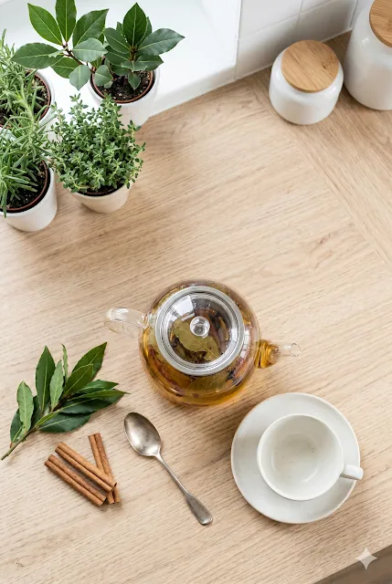

Élixirs naturels · 6 min de lecture
Élixir Laurier et Cannelle : Le Secret Naturel Digestion & Vitalité
L'Élixir Laurier et Cannelle : Votre Nouveau Rituel Matinal pour Réveiller le Corps en Douceur
Vous est-il déjà arrivé de vous réveiller avec cette sensation de lourdeur, comme si votre dîner de la veille pesait encore dans votre estomac ? Vous traînez des pieds, le brouillard mental s'installe, et votre premier réflexe est de vous jeter sur un énième café noir.
Et si, ce matin, on changeait les règles du jeu ?
Imaginez une boisson chaude, réconfortante, aux effluves épicées et boisées, capable de redonner un coup de fouet à votre organisme sans l'agresser. Pas de formule magique ici, juste le pouvoir brut et lointain de deux ingrédients que vous avez déjà dans vos placards de cuisine : le laurier noble et la cannelle.
Prenez une grande inspiration. Aujourd’hui, on prend soin de vous, naturellement.
Le problème : Le piège des matins "au ralenti"
Notre rythme de vie moderne malmène notre système digestif. Le stress, les repas pris sur le pouce ou une alimentation parfois trop riche fatiguent notre corps. Résultat ? Des ballonnements inconfortables, un transit paresseux et une baisse d'énergie flagrante dès le milieu de la matinée. Le réflexe classique consiste à surstimuler notre cœur et nos nerfs avec des boissons énergisantes ou trop de caféine. Mais cela ne fait que masquer la fatigue tout en irritant notre estomac.
La promesse : Retrouver de la légèreté, sans artifice
Cet élixir laurier et cannelle n'est pas un remède miracle, et il ne remplace en aucun cas un mode de vie équilibré ou un avis médical. En revanche, intégré dans une routine quotidienne, il offre une alternative douce et chaleureuse pour accompagner votre corps vers un mieux-être visible. C’est le coup de pouce bienveillant dont votre ventre a besoin pour retrouver son équilibre.
Pourquoi cette approche naturelle va vous faire du bien
La nature fait bien les choses lorsque l'on sait associer les bons ingrédients. En combinant la fraîcheur aromatique du laurier à la chaleur réconfortante de la cannelle, on crée une synergie unique. C'est une boisson thermogénique douce, qui réchauffe l'organisme de l'intérieur, stimule les sens et soutient les fonctions naturelles d'élimination de votre corps.
Les bienfaits potentiels de nos deux super-ingrédients
Le Laurier Noble : Bien plus qu'une simple feuille de mijoté, le laurier est traditionnellement apprécié pour ses vertus sur la sphère digestive. Il peut grandement contribuer à réduire les sensations de ballonnements, à limiter les gaz inconfortables et à favoriser une digestion fluide après le repas.
La Cannelle de Ceylan : Reconnue pour son parfum envoûtant, la cannelle est une alliée précieuse pour la vitalité. Certaines personnes l'apprécient particulièrement dans leur routine pour son effet stabilisant et son coup de boost naturel qui aide à chasser la fatigue passagère.
La Recette Exclusive : L'Élixir "Ventre Léger & Vitalité"
Voici comment préparer cette boisson bien-être en moins de 10 minutes.
Ingrédients requis
3 feuilles de laurier (séchées ou fraîches, idéalement bio)
1 bâton de cannelle de Ceylan (ou une demi-cuillère à café de cannelle en poudre)
500 ml d'eau filtrée
Optionnel : Quelques gouttes de jus de citron frais ou une demi-cuillère à café de miel brut pour la douceur.
Les étapes de préparation
L'infusion : Dans une petite casserole, versez les 500 ml d'eau. Ajoutez les feuilles de laurier (légèrement froissées entre vos doigts pour libérer les huiles essentielles) et le bâton de cannelle.
La cuisson : Portez le tout à ébullition. Dès que l'eau bout, baissez le feu au minimum, couvrez la casserole et laissez frémir doucement pendant 5 à 7 minutes.
Le repos : Coupez le feu et laissez infuser encore 3 minutes à couvert. C'est le secret pour extraire tous les arômes.
Le service : Filtrez la boisson et versez-la dans votre tasse préférée. Laissez tiédir légèrement avant de déguster.
Comment l'utiliser au quotidien ?
Pour profiter au mieux de ses vertus, nous vous conseillons de boire une tasse de cet élixir le matin à jeun, environ 15 minutes avant votre petit-déjeuner, pour réveiller votre système digestif. Vous pouvez également consommer une tasse après le repas principal de la journée pour faciliter le travail de votre estomac et éviter le fameux coup de barre de début d'après-midi.
À qui s'adresse ce rituel ?
Cet élixir est parfait pour toutes les personnes qui cherchent à :
Alléger leur digestion de manière douce et naturelle.
Remplacer ou diminuer leur consommation de café.
Instaurer un moment de reconnexion et de calme dans leur routine matinale.
⚠️ Précautions importantes : Bien que totalement naturel, cet élixir est puissant. Par mesure de précaution, il est déconseillé aux femmes enceintes ou allaitantes. Si vous suivez un traitement médical spécifique (notamment pour réguler la glycémie ou la tension), demandez toujours l'avis de votre médecin avant d'intégrer une nouvelle routine à base de plantes.
FAQ utile pour votre routine
Puis-je préparer cet élixir pour plusieurs jours ?
Oui, vous pouvez doubler les proportions et conserver votre boisson dans une bouteille en verre au réfrigérateur pendant 24 à 48 heures. Il vous suffira de la réchauffer doucement (sans la faire bouillir) avant de la consommer.
Quelle cannelle dois-je choisir ?
Privilégiez toujours la cannelle de Ceylan (dite "vraie cannelle") plutôt que la cannelle de Chine (Cassia). La cannelle de Ceylan est plus douce, plus parfumée et contient beaucoup moins de coumarine, une substance qui peut saturer le foie si elle est consommée en trop grande quantité.
Est-ce que cet élixir fait maigrir ?
Aucun ingrédient ne fait maigrir à lui seul. En revanche, cet élixir est un excellent soutien : il aide à désenfler le ventre grâce à son action anti-ballonnements et remplace avantageusement les boissons sucrées.
Conclusion : Un petit geste pour de grands changements
Prendre soin de soi commence souvent par des détails simples. Cet élixir laurier et cannelle est la preuve qu'il n'est pas nécessaire de chercher des produits hors de prix pour offrir le meilleur à son corps. En accordant 10 minutes à cette préparation, vous envoyez un signal fort à votre esprit : aujourd'hui, je choisis le naturel, la douceur et l'énergie durable.
Alors, prêt à faire chauffer la bouilloire demain matin ?

Envie de reprendre le contrôle total de votre bien-être ? Ne vous arrêtez pas en si bon chemin. Découvrez des dizaines d’autres recettes d'élixirs, de routines matinales et de conseils nutritionnels exclusifs pour transformer votre quotidien. Nos guides pratiques vous accompagnent pas à pas vers une vie plus saine et vibrante d’énergie.
Si la nature ne l'a pas créé, alors ne le consomme pas !
📚 Je suis auteur bien-être sous le pseudo Chest0 JM.S, et mes ouvrages sont disponibles sur Amazon.
🔗 Retrouve tout mon univers ici :
👉
✨ Commence aujourd’hui à nourrir ton système nerveux avec douceur, intelligence et naturel.
« Travail assis : pauses actives »
👉 Créez votre planning de pauses gratuit : chest0.fr/outils/pauses-actives/
« Journal du sommeil »
👉 Tenez votre journal du sommeil sur 7 jours, gratuitement : chest0.fr/outils/journal-sommeil/
« Les 20 aliments des centenaires » et « Microbiote intestinal »
👉 Mes livres de recettes naturelles, élixirs et détox : chest0.fr/pages/livres.html
« 4 habitudes à observer au quotidien »
👉 Faites le point sur vos habitudes avec l'outil gratuit : chest0.fr/outils/equilibre-quotidien/
Plus de 40 recettes d'élixirs dans les livres Chest0.
Voir les livres